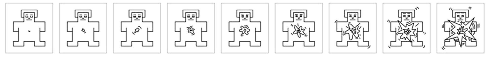

<!doctype html>
<html>
  <head>
    <title>Arousal Study</title>

    <!-- Load jsPsych -->
    <script src="unpkg_jspsych.js"></script>
    <script src="unpkg_jspych_plugin_html_button_response.js"></script>
    <script src="jspsych_plugin_survey_dist_index_browser.js"></script>
    <link href="jspsych_css_jspsych.css" rel="stylesheet" />

    <!-- Load SurveyJS -->
    <script src="survey_core_1.12.1_min.js"></script>
    <script src="survey_js_ui_min.js"></script>
    <link href="survey_core_defaultv2_min.css" rel="stylesheet" />

    <!-- Load JATOS -->
    <script src="jatos.js"></script>
    <style>
      /* Widen the jsPsych + SurveyJS container */
      .jspsych-survey-container {
        max-width: 80vw; /* 80% of viewport width */
        width: 80vw;
        margin: 0 auto; /* center horizontally */
      }
      /* Override SurveyJS internal max-width that was squishing content */
      .sd-body.sd-body--static {
        max-width: 100% !important; /* allow it to fill the wider container */
      }
      /* Black full-width divider under each SurveyJS page title */
      .sd-page__title {
        border-bottom: 2px solid #000; /* solid black line */
        padding-bottom: 0.75rem;
        margin-bottom: 1.25rem;
        width: 100%;
      }

      /* Remove extra spacing created by SurveyJS completed-page pseudo-elements */
      .sd-body.sd-completedpage::before,
      .sd-body.sd-completedpage::after {
        height: 0 !important;
        min-height: 0 !important;
        max-height: 0 !important;
        display: block;
      }
      /* Tighter spacing between SurveyJS matrix radio columns */
      .sv_matrix {
        border-collapse: separate;
        border-spacing: 0 0.25rem;
      }
      .sv_matrix th,
      .sv_matrix td {
        padding: 0.2rem 0.15rem;
        text-align: center;
        white-space: pre-line;
      }
      .sv_matrix .sv_matrix_cell {
        min-width: 2.1rem;
      }
      .sv_matrix .sv-radio-control {
        margin: 0;
      }
      .rating-column-label {
        display: flex;
        flex-direction: column;
        align-items: center;
        gap: 0.15rem;
        line-height: 1;
      }
      .rating-column-value {
        font-weight: 600;
        font-size: 1rem;
      }
      .rating-column-scale {
        font-size: 0.65rem;
        color: #666;
      }
      .arousal-rating-column .sd-question {
        padding-right: 1rem;
      }
      .arousal-unknown-column .sd-question {
        text-align: center;
      }
      .arousal-slider,
      .arousal-unknown {
        display: inline-block;
        vertical-align: middle;
      }
      .arousal-rating-column .sd-question {
        min-width: 500px;
        max-width: 100%;
      }
      .arousal-unknown-column .sd-question {
        min-width: 100px;
      }
      .slider-unknown-row {
        display: flex;
        align-items: center;
        gap: 0.75rem;
      }
      .slider-unknown-row .sd-question {
        margin: 0;
      }
      .slider-unknown-row .arousal-slider {
        flex: 1 1 auto;
      }
      .slider-unknown-row .arousal-unknown {
        flex: 0 0 auto;
        min-width: 3rem;
      }

      .matrix-pair {
        display: grid;
        grid-template-columns: minmax(0, 1fr) min-content;
        gap: 0.75rem;
        align-items: start;
      }
      .matrix-pair .sv_matrix {
        margin: 0;
      }

      .word-label {
        font-weight: 600;
      }

      .sd-paneldynamic__panel {
        display: grid;
        grid-template-columns: 150px 1fr 60px;
        align-items: center;
        gap: 0.75rem;
        margin-bottom: 0.5rem;
      }
      .sd-table.sd-table--columnsautowidth .sd-table__cell {
        width: auto !important;
        max-width: none !important;
      }
      .sd-matrix__question-wrapper {
        display: flex !important;
        justify-content: center !important;
      }
    </style>
  </head>

  <body>
    <div id="jspsych-target"></div>
  </body>

  <script>
    // 1) Initialize jsPsych
    var jsPsych = initJsPsych({
      //on_trial_start: jatos.addAbortButton,
      on_finish: () => jatos.startNextComponent(jsPsych.data.get().json()),
    });

    // 2b) Screen shown if participant does NOT consent
    const no_consent = {
      type: jsPsychHtmlButtonResponse,
      stimulus: `<h2>Thank you</h2><p>You have chosen not to participate. You may close this window.</p>`,
      choices: ["Close"],
    };

    // Generate a participant UUID once per session
    const participant_uuid =
      window.crypto && window.crypto.randomUUID
        ? window.crypto.randomUUID()
        : Math.random().toString(36).substring(2, 10) + "-" + Date.now();

    function buildNumberColumns(ratingColumns, scaleDescriptions = {}) {
      return ratingColumns.map((value) => {
        const scaleText = scaleDescriptions[value];
        const text = scaleText ? `${value}\n${scaleText}` : `${value}`;
        return {
          value,
          text,
          width: scaleText ? "2.7rem" : "2.1rem",
        };
      });
    }

    // Combined multi-page SurveyJS survey (consent + demographics + instructions)
    const combinedSurveyJson = {
      completedHtml: "",
      showHeaderOnCompletePage: false,
      pageNextText: "Next",
      pagePrevText: "Back",
      completeText: "Next",
      pages: [
        // ----- PAGE 1: CONSENT -----
        {
          name: "consent",
          title: "CONSENT FORM",
          elements: [
            {
              type: "html",
              name: "consent_text",
              html: `
                    <center><b>Understanding Word Processing and Meaning</center></b>
                    <p>You are invited to be in a research study about how you read and process words, along with their meaning. We ask that you read this form and ask any questions you may have before agreeing to be in the study.</p>
                    <p>This study is being conducted by Dr. Erin M. Buchanan, Professor of Cognitive Analytics at Harrisburg University of Science and Technology.</p>
                    <p><b><u>Background Information:</u></b></p>
                    In this study, you will be asked to complete different questions about word concepts. For example, you may be asked to define a word's characteristics, rate how familiar you are with a word, or simply judge if a string of letters is a real word.

                    <p><b><u>Procedures:</u></b></p>
                    You will take this study entirely online from a desktop or laptop computer with a keyboard. You will be given instructions about the experiment sections which are randomly selected for each person. After you complete the experiment, you can learn more about the study and goals of the research. The entire study should take less than thirty minutes to complete.

                    <p><b><u>Risks and Benefits of being in the Study:</u></b></p>
                    No identifying information will be collected from you, and therefore, your responses should be anonymous. The current study is similar to an online game, which may cause some fatigue or boredom based on the task you are asked to complete.
                    There is no direct benefit to you for participating in this study. However, your responses will contribute to our understanding of language and cognitive memory processes.

                    <p><b><u>Compensation:</u></b></p>
                    You may be compensated when taking part in this study through your local researcher.

                    <p><b><u>Confidentiality and Data Sharing:</u></b></p>
                    Measures are taken to ensure that all information you provide will be anonymous. The data from this project will be posted publicly for other researchers to use; however, no data will be directly linked to you. Your name or other identifying information will not be entered into the dataset and no references will be made in verbal or written reports that could link you to the study. In any publication, information will be provided in such a way that you cannot be identified.
                    Before your data are shared outside the research team, any potentially identifying information will be removed. The anonymous data may be used by the research team or shared with other researchers, for both related and unrelated research purposes in the future. Your anonymous data may also be made available in online data repositories such as the Open Science Framework (which are free data repositories that require registration to have access), which allow other researchers and interested parties to access the data for further analysis.

                    <p><b>Please note that your data will be anonymous, which means you cannot ask for it to be removed once you have completed the study.</b></p>

                    <p><b><u>Voluntary Nature of the Study:</u></b></p>
                    <b>Participation in this study is voluntary:</b>
                    Your decision whether to participate will not affect your current or future relations with Harrisburg University of Science and Technology or your local institution. If you decide to participate, you are free to not answer any question or withdraw at any time without affecting those relationships.

                    <p><b><u>Contacts and Questions:</u></b></p>
                    The researchers conducting this study are Dr. Erin M. Buchanan in partnership with the Psychological Science Accelerator. You may ask any questions you have now. If you have questions later, you are encouraged to contact Dr. Erin M. Buchanan at semanticpriming@harrisburgu.edu.

                    <p><b><u>Questions or Concerns:</u></b></p>
                    This study has been reviewed by Harrisburg University of Science and Technology's Institutional Review Board (IRB).  The IRB has determined that this study fulfills the human research subject protections obligations required by state and federal law and University policies.

                    <p><a href="consent.html" target="_blank">
                  <b>A copy of this information to keep for your records will be provided upon request.</b>
                  </a></p>
                  `,
            },
            {
              type: "radiogroup",
              name: "consent_choice",
              title: "Do you consent to participate?",
              isRequired: true,
              choices: ["I Consent", "I Do Not Consent"],
            },
          ],
        },

        // ----- PAGE 2: DEMOGRAPHICS (only visible if they consent) -----
        {
          name: "demographics",
          title: "Demographic Information",
          visibleIf: "{consent_choice} = 'I Consent'",
          elements: [
            {
              type: "radiogroup",
              name: "gender",
              title: "Please tell us your gender:",
              choices: ["Male", "Female", "Other", "Prefer not to say"],
            },
            {
              type: "text",
              name: "birth_year",
              title:
                "Which year were you born? Please enter a four-digit year:",
              isRequired: true,
              inputType: "number",
              validators: [{ type: "numeric", minValue: 1900, maxValue: 2025 }],
            },
            {
              type: "radiogroup",
              name: "education",
              title: "Please tell us your highest education level:",
              choices: [
                "Less than high school diploma",
                "High school diploma",
                "Associate's degree or two-year degree",
                "Bachelor's degree or four-year degree",
                "Master's degree or equivalent",
                "Doctoral degree or equivalent",
              ],
            },
            {
              type: "text",
              name: "native_language",
              title: "What is your native (first) language?",
            },
            {
              type: "radiogroup",
              name: "handedness",
              title: "Are you primarily left- or right-handed?",
              isRequired: true,
              choices: ["Left-handed", "Right-handed"],
            },
          ],
        },

        // ----- PAGE 3: TASK INSTRUCTIONS (only visible if they consent) -----
        {
          name: "instructions",
          title: "How to do this task",
          visibleIf: "{consent_choice} = 'I Consent'",
          elements: [
            {
              type: "html",
              name: "arousal_instructions",
              html: `
                    <figure style="margin: 0 0 1rem 0;">
                      
                    </figure>

                    <p>The study being conducted today is investigating emotion, and how people respond to different types of words.</p>
                    <p>We call this set of figures SAM, and you will be using these figures to rate how you felt while reading each word. SAM shows different kinds of feelings: calm versus excited.</p>
                    <p>At one extreme of this scale you would feel completely relaxed, calm, sluggish, dull, sleepy, or unaroused. Indicate feeling calm by selecting the 1 on the left.  Now look at the other end of the calm-excited scale, which is the completely opposite feeling. You would feel stimulated, excited, frenzied, jittery, wide-awake, or aroused. When you feel completely aroused, select the 9 on the right. The figures also allow you to describe intermediate feelings of calmness or excitedness by selecting any other number. If you are not excited nor at all calm, select the 4 in the middle.</p>
                    <p>Please work at a rapid place and don't spend too much time thinking about each word. Rather, make your ratings based on your first and immediate reaction as you read each word. If you do not know the word, please select the letter X.</p>
                  `,
            },
          ],
        },
      ],
    };

    const pretask_survey = {
      type: jsPsychSurvey,
      survey_json: combinedSurveyJson,
      on_finish: function (data) {
        jatos.appendResultData({
          stage: "pretask",
          data: data.response,
        });
      },
    };

    // -----------------------------
    // DEMO AROUSAL TASK (SHORT LIST)
    // Replace `sampleWords` with your 400 words later
    // -----------------------------
    const sampleWords = [
      "dog",
      "bicycle",
      "apple",
      "school",
      "mountain",
      "telephone",
      "democracy",
      "hospital",
      "garden",
      "computer",
      "river",
      "window",
    ];

    // 1) Shuffle words once per participant
    const shuffledWords = jsPsych.randomization.shuffle(sampleWords);

    // 2) Split into small blocks (6 words per block for the demo)
    const BLOCK_SIZE = 20;
    const wordBlocks = [];
    for (let i = 0; i < shuffledWords.length; i += BLOCK_SIZE) {
      wordBlocks.push(shuffledWords.slice(i, i + BLOCK_SIZE));
    }

    function slugifyWord(word) {
      const normalized = String(word || "")
        .toLowerCase()
        .normalize("NFKD");
      const slug = normalized
        .replace(/[^\p{L}\p{N}]+/gu, "_")
        .replace(/^_+|_+$/g, "");
      if (slug) {
        return slug;
      }
      const fallback = normalized
        .replace(/\s+/g, "_")
        .replace(/[^\p{L}\p{N}_]+/gu, "")
        .replace(/^_+|_+$/g, "");
      return fallback || "word";
    }

    // 3) Helper: build ONE SurveyJS page per block (AROUSAL only) using slider + checkbox
    function makeArousalMatrixSurvey(words, blockIndex) {
      const samHtml = `
            <figure style="margin: 0 0 1rem 0;">
              
            </figure>
          `;

      const sliderChoices = Array.from({ length: 9 }, (_, i) => ({
        value: i + 1,
        text: (i + 1).toString(),
      }));
      const rows = words.map((word) => ({
        value: slugifyWord(word),
        text: word,
      }));
      const ratingColumnName = "rating";
      const unknownColumnName = "unknown";

      function hasCheckboxSelection(value) {
        if (Array.isArray(value)) {
          return value.length > 0;
        }
        return value !== undefined && value !== null && value !== "";
      }

      function hasValue(value) {
        return value !== undefined && value !== null && value !== "";
      }

      const surveyJson = {
        showCompletedPage: false,
        showHeaderOnCompletePage: false,
        completedHtml: "",
        completeText: "Next",
        pages: [
          {
            name: `arousal_page_${blockIndex}`,
            title: `Arousal ratings (Block ${blockIndex + 1} of ${wordBlocks.length})`,
            elements: [
              { type: "html", name: `sam_arousal`, html: samHtml },
              {
                type: "matrixdropdown",
                name: `arousal_table_${blockIndex}`,
                title:
                  "For each word, rate arousal (1 = very calm/relaxed, 9 = very excited/activated). If you do not know the word, leave the rating blank and mark X below.",
                rows: words,
                columns: [
                  {
                    name: "rating",
                    title:
                      "Rating (1 = very calm/relaxed, 9 = very excited/activated)",
                    cellType: "radiogroup",
                    choices: sliderChoices,
                    cssClasses: "arousal-rating-column",
                    minWidth: "500px",
                    validators: [
                      {
                        type: "expression",
                        expression:
                          "{row.rating} notempty or {row.unknown} notempty",
                        text: "Please select a rating or mark unknown",
                      },
                    ],
                  },
                  {
                    name: "unknown",
                    title: "Unknown",
                    cellType: "checkbox",
                    choices: ["X"],
                    colCount: 1,
                    cssClasses: "arousal-unknown-column",
                    minWidth: "100px",
                    validators: [
                      {
                        type: "expression",
                        expression:
                          "{row.rating} notempty or {row.unknown} notempty",
                        text: "Please select a rating or mark unknown",
                      },
                    ],
                  },
                ],
                allowAddRows: false,
                allowRemoveRows: false,
              },
            ],
          },
        ],
      };

      return {
        type: jsPsychSurvey,
        survey_json: surveyJson,
        on_finish: function (data) {
          jatos.appendResultData({
            stage: "arousal_block",
            block: blockIndex,
            data: data.response,
          });
        },
        survey_function: function (survey) {
          let syncing = false;

          survey.onMatrixCellValueChanged.add(function (_, options) {
            console.log("EVENT:", options);
            if (syncing || !options) return;

            const question = options.question;
            console.log("QUESTION NAME:", question && question.name);
            if (!question || question.name !== `arousal_table_${blockIndex}`)
              return;

            const rowIndex = options.row && options.row.visibleIndex;
            const rowName = words[rowIndex];
            const columnName =
              options.columnName ||
              (options.column ? options.column.name : null);

            if (!columnName) return;

            const tableValue = { ...(survey.getValue(question.name) || {}) };
            console.log("CURRENT VALUE:", tableValue);
            const rowValue = { ...(tableValue[rowName] || {}) };
            let changed = false;

            // If user clicked Unknown → always clear rating
            if (columnName === unknownColumnName) {
              if (hasCheckboxSelection(options.value)) {
                rowValue[ratingColumnName] = undefined;
                changed = true;
              }
            }

            // If user clicked rating → always clear unknown
            if (columnName === ratingColumnName) {
              if (hasValue(options.value)) {
                rowValue[unknownColumnName] = undefined;
                changed = true;
              }
            }

            if (changed) {
              syncing = true;
              tableValue[rowName] = rowValue;
              survey.setValue(question.name, tableValue);
              syncing = false;
            }
          });
        },
      };
    }

    // 4) Create one jsPsych trial per block
    const arousal_trials = wordBlocks.map((block, i) =>
      makeArousalMatrixSurvey(block, i),
    );

    // Final thank-you screen shown AFTER all word-rating blocks (SurveyJS style)
    const final_thankyou = {
      type: jsPsychSurvey,
      survey_json: {
        showCompletedPage: false,
        showHeaderOnCompletePage: false,
        completedHtml: "",
        completeText: "Finish",
        pages: [
          {
            name: "thank_you",
            title: "Thank you for participating",
            elements: [
              {
                type: "html",
                name: "thank_you_text",
                html: `
                      <p>You have completed the word ratings.</p>
                      <p>Your participant number is:</p>
                      <p><strong>${participant_uuid}</strong></p>
                      <p>Please keep or copy this number if you are asked for it.</p>
                      <b><p>Important: You must click Finish to submit your responses and receive credit or payment.</p></b>
                    `,
              },
            ],
          },
        ],
      },
    };

    // 5) Timeline with consent gating
    const task_timeline = {
      timeline: [...arousal_trials, final_thankyou],
      conditional_function: function () {
        const last = jsPsych.data.get().last(1).values()[0];
        return last.response && last.response.consent_choice === "I Consent";
      },
    };

    const timeline = [
      pretask_survey,
      {
        timeline: [no_consent],
        conditional_function: function () {
          const last = jsPsych.data.get().last(1).values()[0];
          return (
            last.response && last.response.consent_choice === "I Do Not Consent"
          );
        },
      },
      task_timeline,
    ];

    // 6) Run the study
    jatos.onLoad(() => {
      // Get labID from URL query parameters AFTER JATOS initializes
      const labID = jatos.urlQueryParameters.labID || null;

      // Add labID to all jsPsych data
      jsPsych.data.addProperties({ labID });
      jatos.appendResultData({
        stage: "arousal_labid",
        labID,
      });

      jsPsych.run(timeline);
    });
  </script>
</html>
